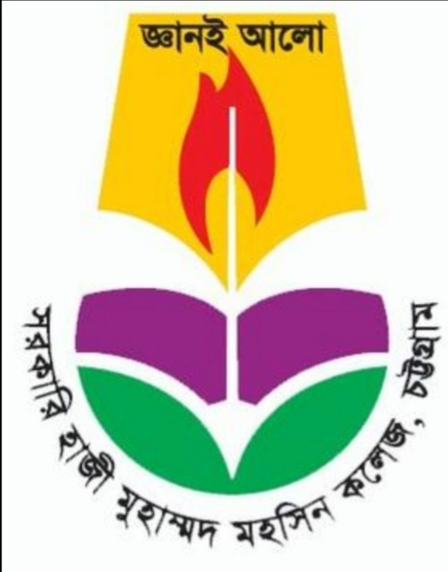
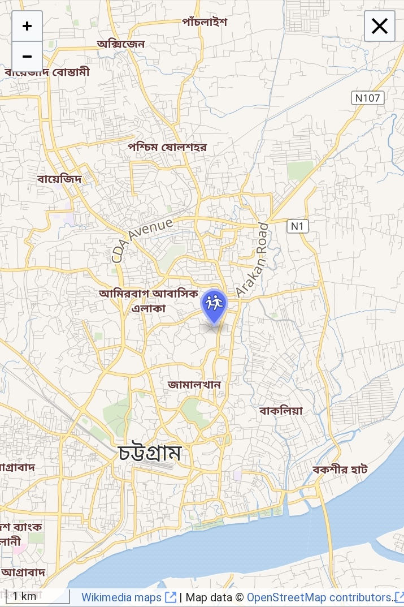

Government Hazi Mohammad Mohsin College (Bengali: সরকারি হাজী মুহাম্মদ মহসিন কলেজ) (alternatively spelled Government Hazi Muhammad Mohsin College) is one of the renowned colleges of Bangladesh located in Chittagong, Bangladesh. Named after Muhammad Mohsin, a 19th-century philanthropist, it is one of the oldest educational institutions in the country. Originally established in British India. It offers HSC (Classes 11-12) in the national curriculum of Bangladesh. It also offers Bachelor's Degree and Master's Degree in various disciplines in association with National University, Bangladesh.